Description of GraphSpace's Interface and Features
This page provides a detailed description of GraphSpace's features and how a user may interact with it in a browser. We document the REST API that allows registered users to programmatically interact with GraphSpace in the Programmer's Guide.
Terminology
This section describes GraphSpace concepts and terms that are used throughout the documentation.
Anonymous vs. Registered user
An anonymous user is anyone that is using GraphSpace without being logged in. An anonymous user does not have access to the REST API and may not be a member of a group. Such a user may upload graphs anonymously via a web interface. We will delete graphs that are uploaded after 30 days.
A registered user is anyone that is logged into GraphSpace. By logging into GraphSpace, a user has full access to the REST API and is allowed to be a member of groups. Graphs uploaded by a registered user will remain in that user's account unless explicitly deleted by the user.
Graph visibility: Private, Shared, or Public
The visibility of a graph uploaded by a registered user can have one of three states: private, shared, or public. The visibility of a graph controls who can view the graph and interact with it upon visiting the URL associated with that graph.
- Private
- When a registered user uploads a graph to GraphSpace either through the REST API or through the web interface, its visibility is private, i.e., only the graph owner (the user who uploaded it) can view it.
- Shared
- A graph owner may share a graph with one or more groups. At this point, the graph's visibility is shared, i.e., all members of these groups may view the graph.
- Public
- A graph owner may make the graph public through the REST API.
When an anonymous user uploads a graph, it is by default a public graph, i.e., it is accessible to any user who visits GraphSpace and knows the URL of the graph.
Groups
A group is a collection of GraphSpace users. For example, if there are multiple researchers who are collaborating a project, a group may be created containing all of them. Another use case for a group is for all students registered in a network biology course. Once a GraphSpace user becomes a member of a group, the user may share any graph that he/she owns or a layout of such a graph with the group. Only members of that group will be able to access the graph. A user may share a graph will multiple graphs. Conversely, a user may be a member of multiple groups but share a graph only with some of these groups.
A group owner is the creator of the group. Any GraphSpace user can create a group by visiting the Groups page and clicking the "Create group" button. The group owner may
- Invite any GraphSpace user that has an account to be a member of their group.
- Remove any member from the group.
- Unshare any graph that has already been shared by the members of the group
A group member is a user who is a part of a group. (A group owner is trivially a member of the group.) A group member may
- Share a graph owned by him or her with a group.
- Unshare a previously shared graph.
- Share a layout for a previously shared graph.
- Unshare a previously shared layout.
The Groups page provides access to all the groups owned by the user (by clicking the link "Owner of") as well as the groups of which the user is a member (via the link "Member of"). The user will have the option to delete a group (if the user wowns it) or to unfollow a group (if the user is a member).
Clicking on the name of a group will open a new page that lists all the graphs in that group. This page will also contain a panels to search for nodes and edges in graphs belonging to that group and a panel to search for graphs in that group that match specific tags. If the user owns the group, there will be an interface to add or delete members. If the user is a member of group, the user can only see who are the other members of the group.
Notes:
- Users must have GraphSpace accounts and be logged in in order to access group functions.
- By design, groups are private, i.e., a GraphSpace user does not have access to the names of groups of which the user is not a member.
- GraphSpace does not have a mechanism wherein a user may request to become a member of a group. All memberships must be managed by private communication.
Upload graphs
GraphSpace provides two methods to upload graphs: through the REST API or through the web interface.
Via the REST API
This approach allows one to be more flexible and utilize all of the CSS features by specifically referencing them in the JSON for the graph. Please refer to the Programmer's Guide for more information.
Via the Web Interface
As an alternative to the REST API for uploading a graph, we provide a simple web interface for uploading individual graphs. We support the following types of graphs:
- Graphs that follow the GraphSpace JSON format. As explained in the GraphSpace JSON reference, we have extended the JSON format used by Cytoscape.js. These files must use the .json extension.
- Graphs that a user of Cytoscape (v3.1 or later) can export into a different JSON format, which we call "cyjs". Please follow these instructions to export your Cytoscape graph to this format. These files must use the .cyjs extension. Note: Files using the .cyjs format may only be uploaded via the web interface.
If a user has an account and is logged in, this interface will upload the graph directly into the user's account, much like using the REST API. If a user does not have an account or is not logged in, this upload functionality will provide a unique URL through which the user may interact with the graph represented by the uploaded file. Note: After 30 days, we will delete all graphs that are uploaded for unregistered users of GraphSpace.
Interact with graphs
We will use the following public graph as a running example. When viewing a graph, you will notice several panels to the right. Some of these panels may be closed. Clicking on an individual panel will reveal information within it.

Node and Edge Popups
Each node or edge in a graph may have information embedded in it. Clicking on a node or edge will colour that element's border color red. If the clicked node/edges contains information (see JSON reference), this information will appear in a pop-up box; otherwise, no pop up will be shown. If this information is formatted in HTML, GraphSpace will interpret it appropriately. The image below shows an example of the information that is contained inside of a node CCT6.
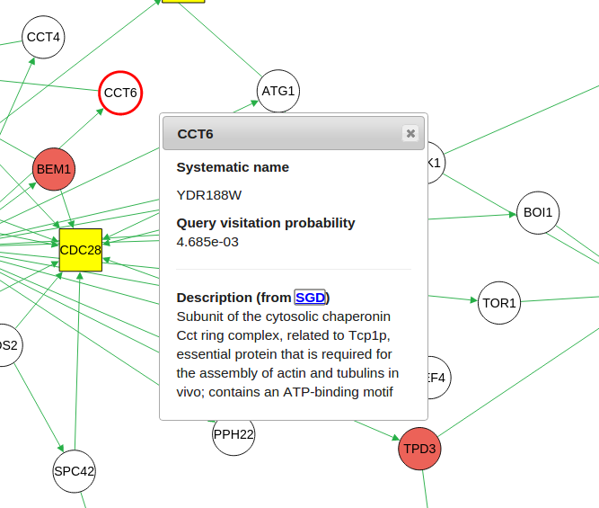
Graph Details Panel
This panel contains information describing the graph, e.g., a legend.

Search Panel
This panel provides an interface that allows the user to find nodes/edges that match search terms. See Elements within a graph for information on query semantics.
If one or more nodes or edges matches the query, GraphSpace generates a link above the search bar. Visting this link will display the graph with all the nodes/edges matching the search terms highlighted. The user can share this URL with other GraphSpace users who can access this graph.
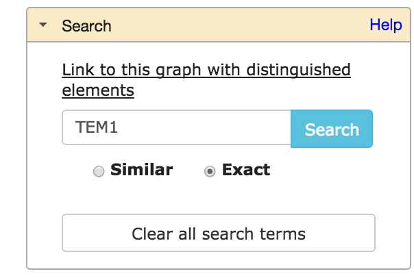
Export Panel
Through this panel, a user can export an image of the current layout of the graph as a PNG file. The JSON option allows a user to see the the JSON representation of the graph.
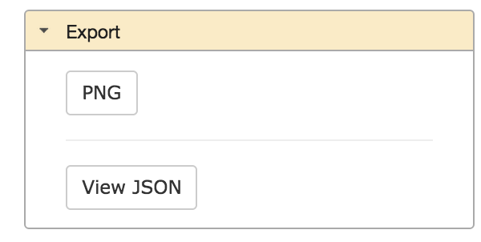
Owner Panel
This panel shows the GraphSpace user to whom the graph belongs.
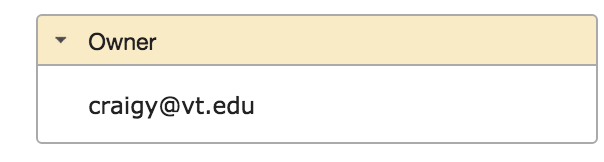
Sharing Panel
This panel displays all the groups with which the graph is shared. If the user is the owner of the graph, the panel will also provide an interface to allow the user to share this graph with all the groups of which the user is a member.

Layouts Panel
By a "layout," we mean an assignment of x- and y- coordinates to each node in a graph that allows it to be drawn on the screen. The user may move nodes manually to manipulate the layout. This panel provides access to several functions:
- A powerful layout editor.
- Multiple algorithms to layout a graph.
- Ability to save layouts.
- Abilily to access saved layouts later and share them with other users. Note: a user must be registeted with GraphSpace in order to save and share layouts.
In this section, we focus on the last three features, with the layout editor described separately.
Auto Layouts

Manual Layouts
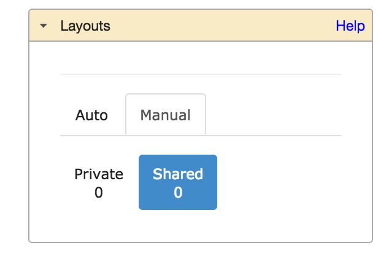
- Automatic layouts
- The 'Auto' tab allows the user to apply several automatic layout algorithms available through Cytoscape.js. Note that GraphSpace may expose only some of the algorithms available in Cyotscape.js.
- Saving layouts
- Any registered user who can access the graph may save the current layout by clicking the "Save layout" button in the "Layout" panel. A pop-up will allow the user to enter the name of the current layout. GraphSpace will prevent the user from using a name that is already associated with another layout previously saved by the user. The user may save a layout that is generated automatically, through the layout editor, or by manual manipulation of node positions.
- Accessing saved layouts
- The 'Manual' tab provides access to saved layouts. Clicking on this tab will show two sets of layouts: 'Private' and 'Shared'.

- Private layouts are those previously created by the user but not shared with any other users. When the user clicks on one of the saved layouts, GraphSpace displays the following options: (i) a direct link (URL) to this layout, (ii) change the name of the layout, (iii) share this layout with other users who have access to this graph, (iv) delete this layout, and (v) make it the default layout, i.e., instruct GraphSpace to display this layout whenever a user visits the page for this graph. Note: A user may share the layout only if the graph is shared with at least one group.
- Shared layouts are those created by the user or by some other user and also shared with the groups that can access this graph. When the user clicks on one of the saved layouts, GraphSpace displays the following options: (i) a direct link (URL) to this layout, (ii) change the name of the layout, (iii) unshare this layout with other users who have access to this graph, and (iv) make it the default layout, i.e., instruct GraphSpace to display this layout whenever a user visits the page for this graph.
Layout Editor

GraphSpace provides powerful tools for the selection, movement, and organization of multiple nodes in a graph. The user can activate this functionality by clicking the Use Layout Editor button in the Layouts panel. Clicking this button takes a user of GraphSpace to a simplified view of the graph that de-emphasizes edges and hides node names. The Start Tour button walks the user through all the features provided in the tool pallette. The Exit layout editor button gives a user the option to save the current layout and/or go back to the original view of the current graph.
In the layout editor, the user may wield the tool pallette on the right hand side to quickly re-arrange the structure of the graph. The picture below shows the simplified version of the graph seen throguhout this guide.
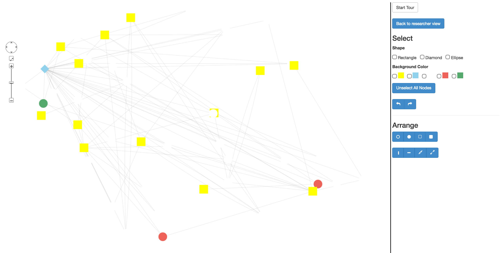
The Select section allows the user to choose nodes in the graph based on two types of properties: Shape and Color.
The Shape section allows a user to select all nodes that have any of the selected shapes. For example, if a user wishes to select all nodes that are rectangles or ellipses, he/she will select both "Ellipse" and "Rectangle" in the tool pallete.
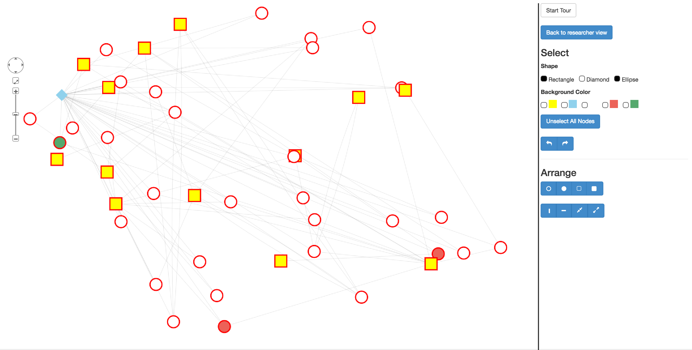
The Color section allows a user to select all nodes that are any of the selected colors. For example, if a user wishes to select all nodes that are yellow or green, he/she will select both yellow and green.
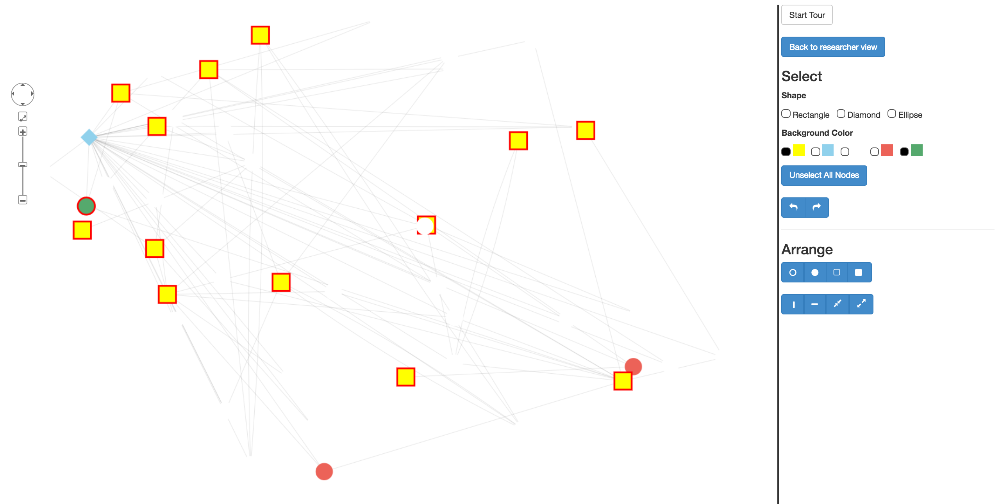
If a user wants to select all nodes that are rectangles AND are yellow, they would select rectangles from the Shape section and yellow from the Color section.
 A user may click on the Unselect All Nodes button to reset all selections. The Undo and Redo buttons allow the user to undo or repeat all actions, including selection and the arrange functions described below.
The Arrange section allows a user to arrange all selected nodes into regions of different shapes. The following picture shows the arrangements of selected nodes that users may construct by clicking different buttons in this section.
A user may click on the Unselect All Nodes button to reset all selections. The Undo and Redo buttons allow the user to undo or repeat all actions, including selection and the arrange functions described below.
The Arrange section allows a user to arrange all selected nodes into regions of different shapes. The following picture shows the arrangements of selected nodes that users may construct by clicking different buttons in this section.
Open Circle

Closed Circle

Open Rectangle

Closed Rectangle

Vertical Line
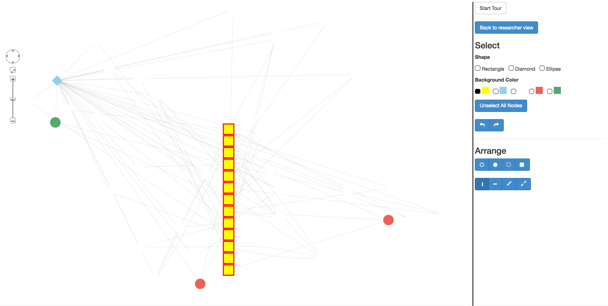
Horizontal Line
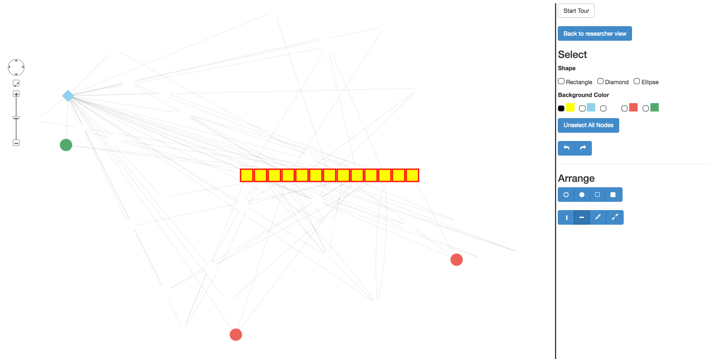
Pinch
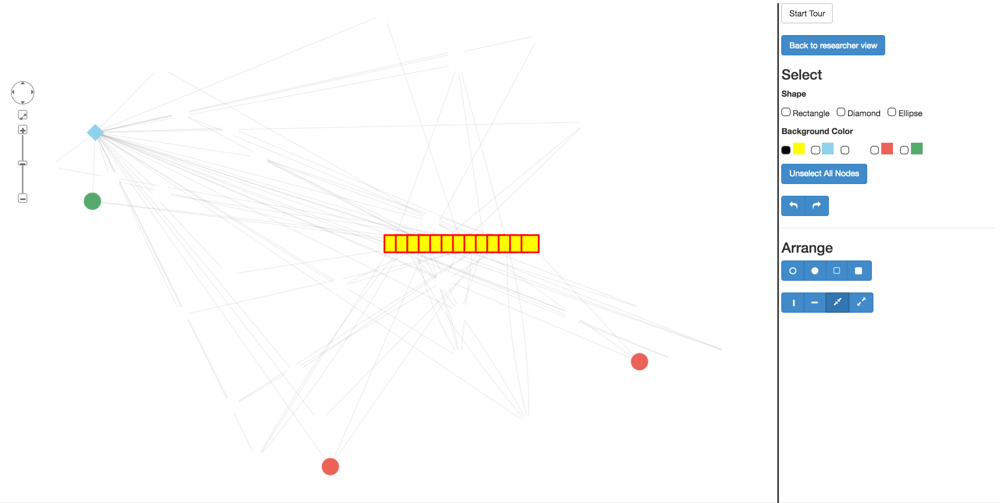
Expand

Filter Nodes and Edges Panel
Graph algorithms may output networks where nodes and edges can be ranked, e.g., by path index or by weight/score.
GraphSpace allows each node and edge to have an integer-valued attribute called k
that specifies the rank of the node or the edge. For any network that contains this attribute (and only for such networks),
GraphSpace displays the "Filter nodes and edges" panel with two sliders. The user can adjust these sliders to
view only those nodes and edges with values of k below a threshold. This interface element
allows the user to unveil the network gradually in real time and gain intuition about how
the network expands or contracts as this threshold changes.
- Current rank
- Changing the value in this slider hides all nodes and edges whose k values are less than or equal to the value in the slider. The possible values in this slider range from 1 to the value in the bottom slider labeled "Maximum rank". The images below show a user stepping through a graph using this slider. For example, changing the value from 8 to 10 revealed the red node and the edge connecting it to the blue node.
- Maximum rank
- Changing the value in this slider hides nodes and edges as for the top slider. Moreover, for automatically generated layouts, GraphSpace will lay out afresh the corresponding subgraph of that network. Decreasing the value of this slider in conjunction with the redraw is especially useful for viewing large or dense networks using automatic algorithms. For saved layouts, this slider only hides the relevant nodes and edges without changing the coordinates of the displayed elements.
Changing the value in the bottom slider also automatically controls the range in the top slider. Hence, the two sliders can be used in combination, e.g., to restrict the view to the top 50 nodes and edges in the graph (select "50" in the bottom slider) and then to step through the first 50 nodes and edges (vary the top slides from "1" to "50").

 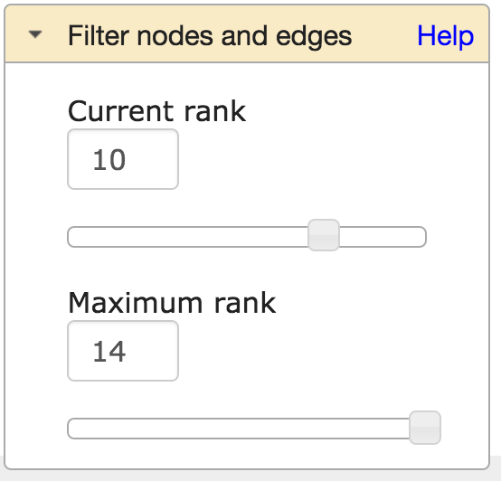
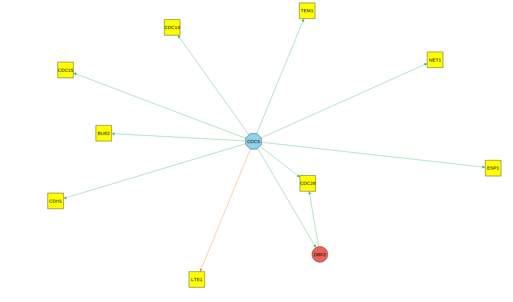
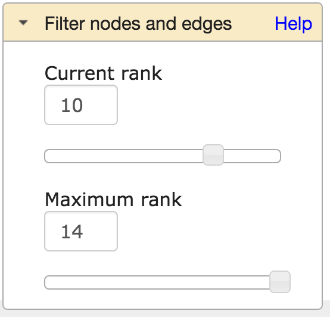
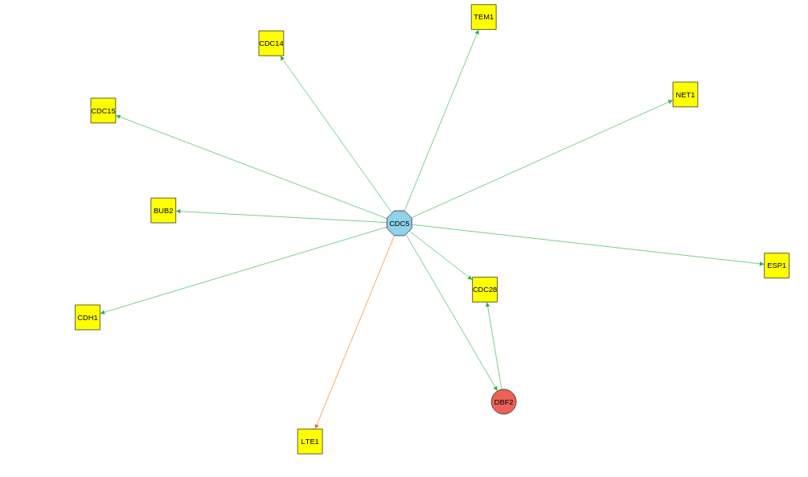
Share graphs
A user may share a graph and its layouts with groups to which the user belongs.
Sharing graphs with group(s)
There are two ways to share a specific graph owned by the user: the REST API and the Sharing Panel.
A user may share a graph with multiple groups. In order to share a graph, the user must own it. In addition, the user must be a member or the owner of the group he/she wants to share the graph with. Sharing a graph allows all the members in the group to access the graph. Un-sharing a graph from a graph means that no one else in the group will be able to access that graph anymore.
Sharing layouts with group(s)
Similar to a graph, a layout may also be shared with a group. In order for a layout to be shared with a group, the graph must already be shared with the group.
Currently, the only way to share a layout is through the Layouts Panel.
Initially, only the creator of a saved layout is allowed to access it. Note that a layout may be created by a user who is not the owner of the graph, as long as the layout creator can access the graph (because the owner has shared it). Sharing a layout changes its access as follows:
- Public graphs
- The layout is also publicly available, i.e., to all users of GraphSpace.
- Shared graphs
- The layout is accessible to every user who is a member of a group with which the graph is shared, as long as the layout creater is also a member of that group.
Search graphs
GraphSpace allows the user to search at two different levels. First, the user may visit the Graphs page and search for all graphs (owned by or shared with the user or public) that match the query. Second, the user may visit a specific graph to find nodes and edges within it that match a query.
Semantics
GraphSpace supports simple search semantics:
- Node
- Provide the node's label or id, e.g., AKT1
- Edge
- Use the syntax tail:head, where tail is the name of the source node and the head is the name of the target node, e.g., Wnt:Fzd.
- Multiple nodes/edges
- In order to search for multiple terms, simply seperate each search term with a ",". For example: AKT1, AKT3, CTNNB1.
- Similar or Exact
Elements within a graph
GraphSpace allows a user to search for a nodes and edges that are inside a graph. If a search term is found in the graph it is highlighted in the graph. Multiple nodes and edges may be searched for within a graph by seperating each node/edge with a ",".
For example, if a user searched for the node 'TEM1', then the node will look like this:
TEM1 before searching

TEM1 after searching

If a user wants to search for edge connection from TEF4 to TEM1, they can do so with the following search command: TEF4:TEM1. The edge will look like this:
Before searching for edge

After searching for edge
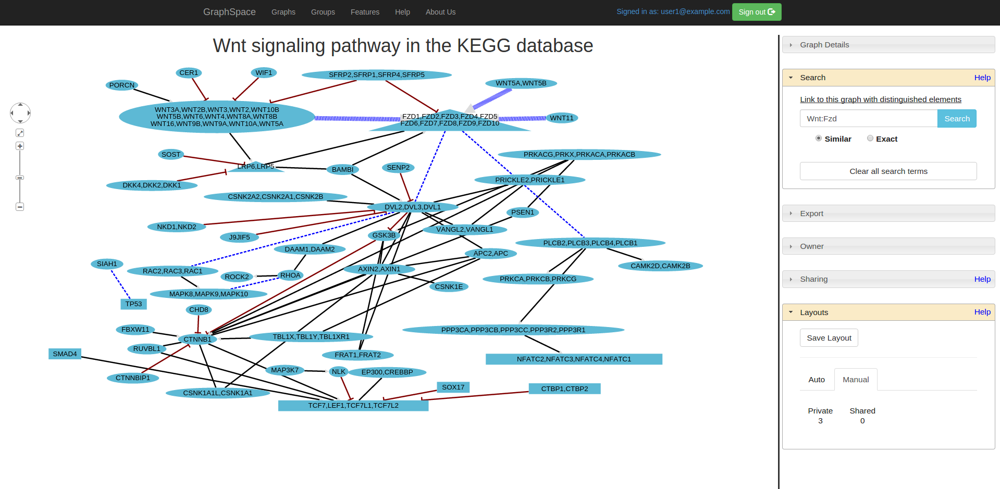
The Similar option under the search bar allows one to search for all elements within a graph which may have the search term as part of its value. For example, if there are two nodes CDC5 and CDC55 and the user does a similar search with the term 'CDC', then both CDC5 and CDC55 will be highlighted.
The Exact option under the search bar allows one to search for all elements within a graph that are identical to the search term. If there are two terms CDC5 and CDC55 and the user does an exact search with the term 'CDC5', only CDC5 will be highlighted. Note: If the user had searched for the term 'CDC', nothing would have been highlighted since there are no nodes in our example graph which have CDC as their entire value.
Note:If there are mulitple search terms, all elements that are contained within the graph that is being searched on will be highlighted.
Graphs that contain elements
The Similar option under the search bar allows one to search for all graphs that may contain that word in the graph itself. This option will return all the graphs that may have a node which contains parts of the term(s) being searching, graphs that may contain part of the searched term in its name, as well as if there are edges which contain part of the searched term(s).
The Exact option under the search bar allows one to search for all graphs that have exactly what is being searched for. Graphs returned from this option may have a node, graph name, or an edge which is identical to the searched term(s).
To search for graphs that match a graph name, simply type the name or a part of the name of the graph
To search for nodes, type the content inside of the node (text that is contained inside of a node)
To search for edges, search using the following syntax [tail: head] where tail is the name of the node where the arrow is coming from and head is the name of the node that the arrow is point to. For example, to search for the edge that connects YEF3 to SIR2, type YEF3:SIR2. All graphs that contain this edge will be presented to the user.
If searching for multiple values, separate all individual search terms with commas. Ex: AKT1, AKT3, JUN
Note:If there are multiple search terms (and/or tag terms), all graphs that are returned WILL match all of these terms. All graphs that are returned by the searches of a node and/or an edge will have all searched terms highlighted inside the graph.
Organize Graphs Using Tags
To aid the organization of graphs, GraphSpace uses the concept of tags. Each graph may have any number of tags. A tag is a useful mechanism for grouping a set of graphs, e.g., all the graphs that a user may desire to make public upon the publication of a paper. All tags associated with a graph must be defined in the metadata for the graph. Hence, tags may be specified only when a user uploads graphs using the REST API. A user can search for graphs that match a tag. To search for multiple tags, simply separate them with commas. Currently, the user must know the exact name of the tag.
Note: Tags provide a level of organization that are orthogonal to groups. Groups are intended to organize collaborating users of GraphSpace while tags are used to collect graphs.